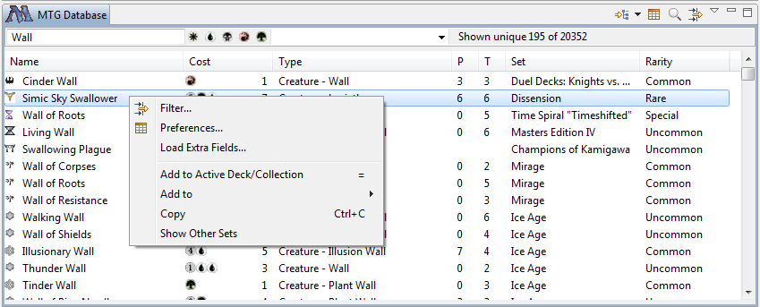

Basic Tutorial
Workspace
Workspace is the directory where Magic Assistant store all its data, in version 1.1 and below it is directory where
application itself is unzippped, in 1.2 it is in your home directory, in subdirectory MagicAssistantWorkspace.
Check installation instructions if you want to change it.
Overview
Magic Assistant is application for browsing "Magic: The Gathering" ™ cards
(see official wizards website)
and organising cards into decks and library collections. Also contains tournament organizer for MTG in-house tournaments.
For more information on Magic Assistant check Magic Assistant website.
App contains two distinct window sets, called perspectives. Default is "Card Organizer", you can also switch to
"Tournament Organizer" from Windows menu.
Car Organizer perspective contains several views (subwindows):
MTG Database - To browse existing mtg cards,
Card Info - To view detailed card information and picture,
Card Navigator - To browse your own decks and collections,
My Cards - To browse all your personal cards,
Decks - To look at the cards in each deck or collection individually, and run deck analysis tools,
Printings - To show sets in which selected card is available.
Instances - To show all instances of card with given name in your collection (real or virtual)
Collector - View of your personal cards with fields and grouping relevant to card collector, rather than player
You can changes layout of your views but dragging them around by the header. If you get lost you can reset to original layout using
menu "Window->Reset Perspective...".
If you are not familiar with eclipse please note that some actions are available from the "view menu", this is
small triangle at the top right corner of each view. Context sensitive actions are available from context menu, which
is invoked by "mouse right click".
Updating Magic Card Database Online
MTG Database View shows all available cards. By default it will only
show cards witch pre-loaded with application. It can quickly be out of date,
to keep database in sync you have to perform cards updates. In version 1.2 and above
it will check for update automatically.
To update cards manually, see updating database section.
Cards are updated from the official magic maker website called Gatherer http://gatherer.wizards.com.
If you see something wrong with database info please check this website first and report issues to them.
For sets they don't have there is a complicated procedure of how you can extend database manually, ask on forum if you need to know that.
Browsing and Searching
To browse cards you can use grouping, sorting and filtering:
You can sort by any column by clicking on the column header in the views that display card tables.
If you click again sorting order is reversed. You can also see more columns, control is available from "Preferences..."
menu of the view menu  .
You can filter cards in the view by opening filter. Filter action is on view toolbar and also available from the view menu.
You can select one of more criteria from the filters.
See details in
Filter Dialog reference.
You can also filter cards by name, type and colour using quick filter - the bar on top of card tables (since 1.2).
Grouping is also available from the action bar of view menu, there is few fields and field combination you can group by.
.
You can filter cards in the view by opening filter. Filter action is on view toolbar and also available from the view menu.
You can select one of more criteria from the filters.
See details in
Filter Dialog reference.
You can also filter cards by name, type and colour using quick filter - the bar on top of card tables (since 1.2).
Grouping is also available from the action bar of view menu, there is few fields and field combination you can group by.
You can bring up search control using Ctrl-F key or using view menu "Find...".
It allows you to find a card in the view by name (or part of name). Compare to filter it does not remove the cards from
the list.
See details in
Search Bar reference.
Card details and scanned card picture are shown in the Card Info view.
It shows card image if available (downloads it from internet), and also shows card name, description and type below the image.
Click on the card in any of the tables to see card info in this view. See more details in Card Info View
reference.
Building a deck
To build a deck you need Card Navigator view,
from there you can add a new deck and place it in the desired folder. After deck is created you can populate
it by moving cards from database or from other decks or collection, or using deck Import.
See more details in Creating and Populating a Deck or Collection.
You can edit cards in your decks and collections. To edit card properties you can select one or more cards from the
table and choose "Edit..." from context menu (or double click on a card). Editable card properties currently are:
count, comment, ownership and price.
You can analyse you deck using some tools: Mana Curve, Colors, Card Types, Draw, Legality - these are tabs at the bottom of the
deck view. Also you can group cards to achieve same statistics in the main table tab using Group By menu (from the view menu).
Mana Curve - shows chart of your deck mana curve (number of cards vs cost) for spells (land is not there).
Average bars - is normal distribution of cards in average deck adjusted to number of cards in your deck (hardcoded in program, it is not based on your decks) .
If you have sideboard it is stored in the separate list. To bring it up use Open Sideboard action from toolbar or view menu of Deck view.
Drag and drop cards to sideboard from other sources same as for main deck. If you want to see sideboard and main deck at
the same time drag sideboard view to the bottom (and have main on the top). Sideboard is linked the the main deck, tabs like Legality and Export
are also looking at sideboard cards (while tabs like Mana Curve don't). Operations like deck Rename or Delete will also affect its sideboard.
Storage and Internet
All data is stored in directory called "workspace" (conceptually, the real name is whatever you named it). When app first
starts it will ask where your workspace is. You only need one workspace.
Don't put it inside installation dir - that can create problems with software update and upgrade. Decks and Collection as well as database itself
are store in xml format, means you can edit it in editor if you really wish. All card images and set images are loaded
from internet and cached in workspace as well. If you choose to do so you can work offline, controlled by settings. If you behind firewall there
are settings to allow a redirect.
If you want to host your decks on the cloud you can do so by enabling syncronization of your workspace or its subfolders
into the cloud storage such as box, dropbox, google drive, etc. Whole workspace is probably a not a good idea since it
contains cached images which would take majority of the space. Next option is to sync workspace/magiccards folder which
is all your cards and database.
It is recommended to backup your data once in a while by zipping contents of magiccards folder
If you have issues with software you can send a bug Help->Send Bug or Feature Request and attach the log file
found at workspace/.metadata/.log if this is a bug.
Other stuff
Some other actions available from main menu, context menu (right click) or from view menu (triangle button in the view header ).
See also MTG Database View reference.
.